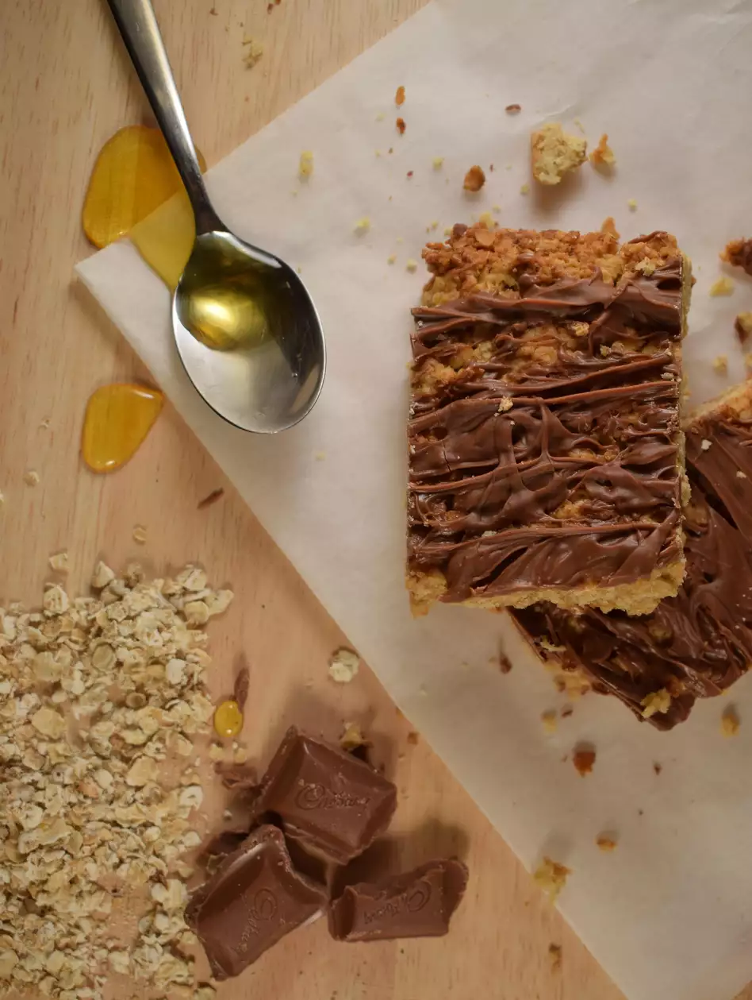

Simple British Flapjack

This is a simple but tasty flapjack recipe from the UK that is very easy and simple to do for anyone of any skill, even kids. Flapjacks are a simple sheet cake with oats, sugar, golden syrup, butter, and raisins.
- ½ cup butter
- 3 tablespoons white sugar
- 2 tablespoons golden syrup
- 2 cups rolled oats
- 5 tablespoons raisins (Optional)
- 1 (5 ounce) milk chocolate, melted (Optional)